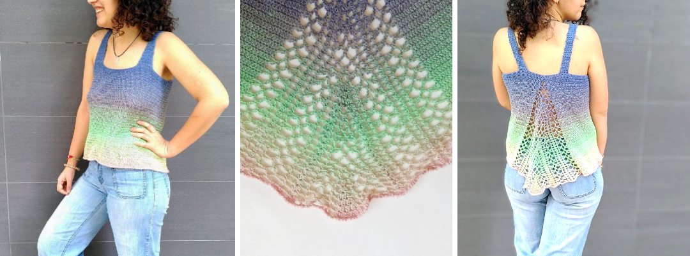
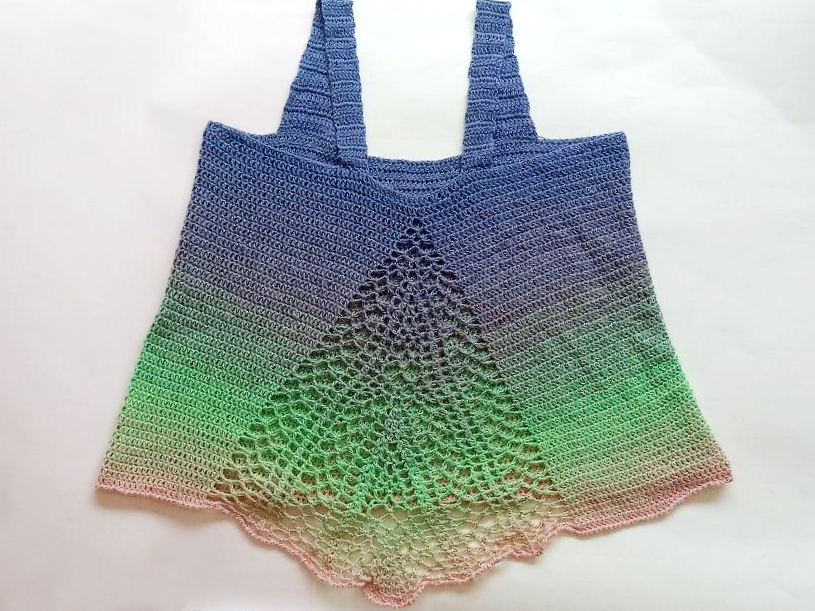
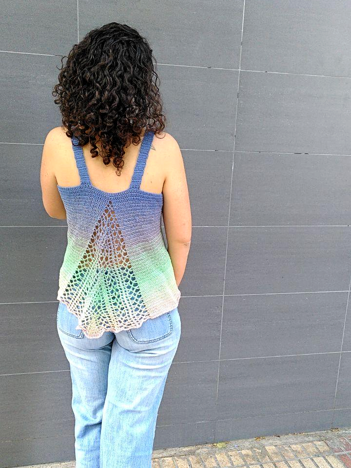

Top Summer Candy
 ¿No os encantan los ovillos degradados? El resultado con este tipo de ovillos es siempre espectacular y tejer con ellos es muy entretenido, ya que, aunque el patrón sea muy sencillo, ir viendo cómo se suceden los colores del hilo lo hace especial. La verdad es que nos encantan, no podemos evitar comprarnos alguno de vez en cuando, aunque no tengamos un proyecto concreto, porque son preciosos.
El patrón que os presentamos hoy surgió con la intención de usar uno de esos ovillos que teníamos por casa. La verdad que casi todos los patrones que se hacen pensando en este tipo de hilos son chales, ya que tienen construcciones sencillas y siempre quedan bien, pero yo quería un top. Yo quería un top que luciese el degradado del hilo, que no fuera muy complicado, que fuera cómodo y fresquito, y bonito, ¡claro! Y así es como nació el top Summer Candy.
El diseño me salió de manera muy natural. Por un lado, supe desde el principio que sería un patrón tejido en espiral, ya que era una manera muy sencilla de dejar fluir los cambios propios del hilo. Por otro, buscaba una construcción muy simple, así que pensé en los tops de corte recto que se ensanchan mediante una apertura en la espalda y se me ocurrió que cambiar la apertura por un calado le daría al top el toque especial que buscaba. Con esa idea me puse a tejer, fui improvisando y ¡el resultado me encanta!
De hecho, estamos tan contentas con el resultado que no podíamos dejar pasar la oportunidad de compartir el patrón para que otras personas también puedan tejerlo. Este proceso se ha complicado más de lo que esperábamos, pues queríamos hacer un gráfico con el calado de la espalda, pero ¡no se me ha dado muy bien! :S Finalmente, hemos decidido sacar el patrón escrito y añadir el gráfico cuando lo tengamos, así que, ponemos a vuestra disposición la versión escrita del patrón. Podéis encontrarlo en nuestra página de Ravelry.
Por la forma del diseño lo he publicado como talla única, pero es fácilmente adaptable, haciendo pequeños cambios al patrón. Si quieres adaptarlo a otra talla y tienes cualquier duda, estaré encantada en echarte una mano, así que escríbeme por correo o por Instagram. Por supuesto, también agradeceré que me escribas si encuentras cualquier errata o si algo no está explicado con claridad. Si lo tejes, nos encantará ver tu creación. Etiquétanos con los hashtags #topSummerCandy y #vidaypunto. Esperamos que os guste. :D
¡Feliz verano!